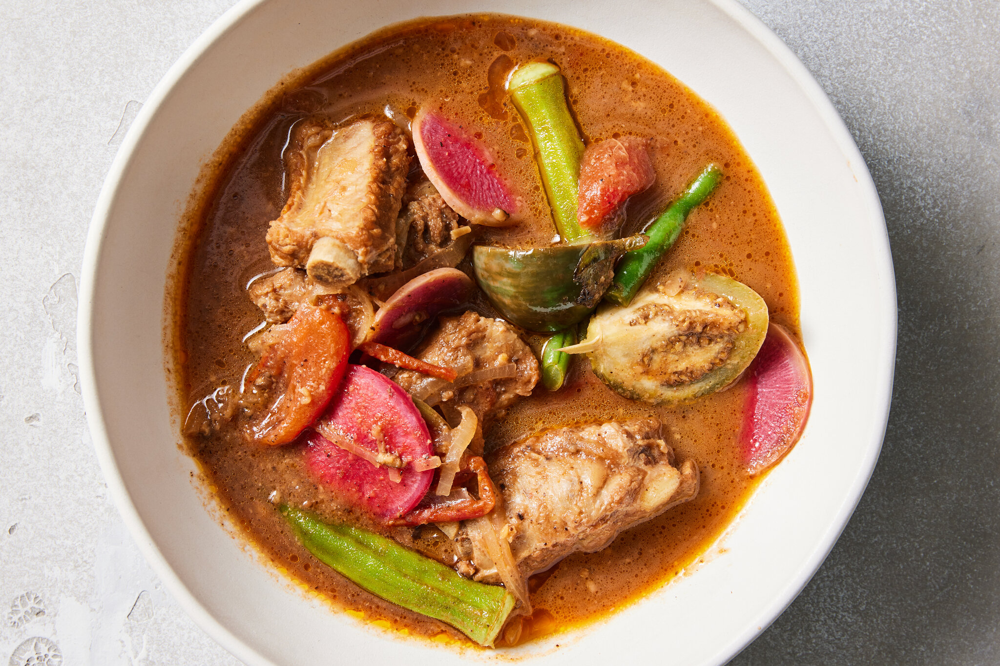

Sinigang Recipe
Description
Sinigang is a sour soup native to the Philippines. This recipe uses pork as the main ingredient.
Other proteins and seafood can also be used. Beef, shrimp, fish are commonly used to cook sinigang.
Ingredients
- Pork Belly
- Young Tamarind
- Water Spinach
- String Beans
- Eggplant
- Daikon Radish
- Long green pepper
Steps
- Extract The Flavors From The Tamarind
- Boil The Tamarind Broth And Cook The Meat
- Add The Vegetables Sequentially
- Season It And Then Add The Remaining Ingredients